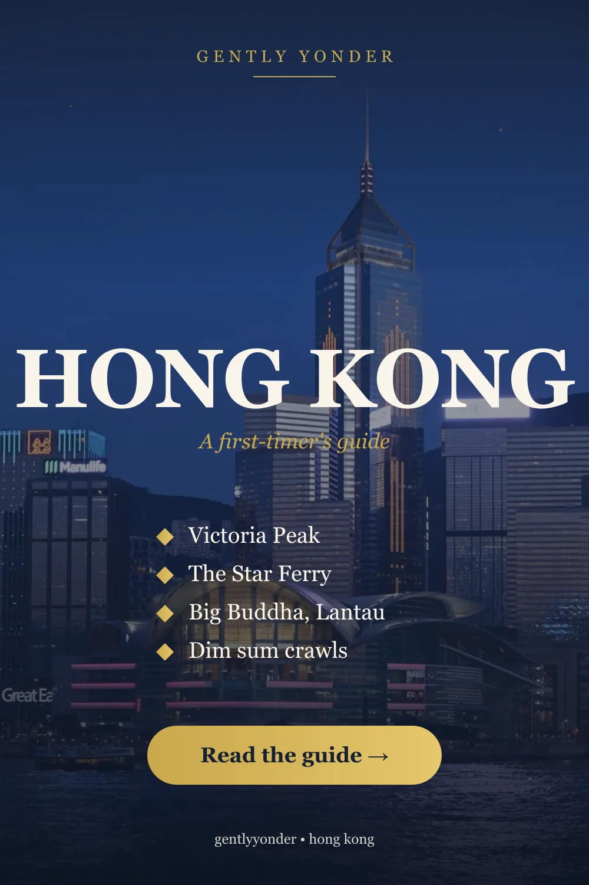
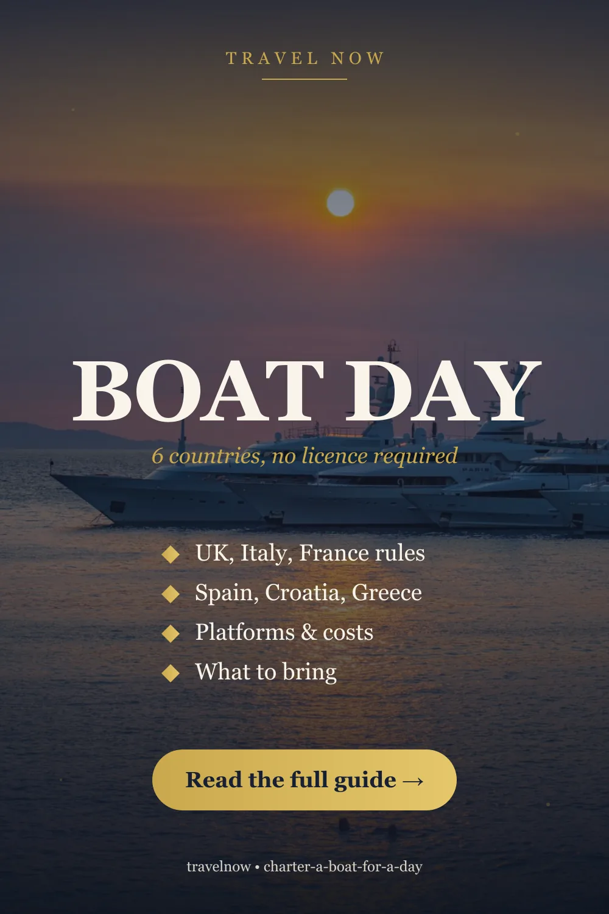

Answer first, and it will save you money: the Symphony of Lights is free from the shore, and the best-value boat in Hong Kong costs less than a coffee. The Star Ferry crosses Victoria Harbour for a few dollars and gives you the skyline from the water. So the honest question isn’t “should I do a harbour cruise” — it’s what does a paid cruise add that the ferry and the promenade don’t?
Usually three things: a drink in your hand, an open deck facing the right way, and forty-five minutes of not standing in a crowd. Whether that’s worth it depends which of the following you book.

1. Symphony of Lights cruises — the popular one
The Symphony of Lights runs nightly at 8pm, with lasers and lights playing off the towers on both sides of the harbour. Boats time their loop to sit mid-harbour for it, which is the one genuine advantage over watching from land: on the water you’re inside the show rather than looking at one bank of it.
Typical shape: a 45-minute yacht cruise with unlimited drinks and snacks. Boarding is staggered through the evening — from Central at 17:20, 18:20, 19:20, 20:20 and 21:20, and from Tsim Sha Tsui at 17:35, 18:35, 19:35, 20:35 and 21:35 — so you can pick a departure that puts you mid-harbour at eight.
The honest caution: the Symphony of Lights is atmospheric rather than spectacular. If you arrive expecting a fireworks-grade show you may find it modest; if you take it as a reason to be on the harbour at night with a drink, it delivers. You can compare harbour cruise departures and boats here and cross-check the same boat on a second platform.
2. The sunset and blue-hour cruise — the one I’d actually book
If you only take one paid boat, make it the late-afternoon departure, around 17:00–18:00. In that window the skyline goes from daylight to blue hour to fully lit while you’re on the water — three completely different cities in one trip. The 8pm-only cruises give you one of those looks; the earlier one gives you all three.
It’s also the better photograph by some distance. Hong Kong’s towers look flat in daylight and blown-out at full night; the fifteen minutes when the sky is deep blue and the lights are on is when the harbour looks like the postcard.
3. The red-sail junk — the picture you already have in your head
The scarlet-sailed Chinese junk working Victoria Harbour is Aqua Luna, and it is the most photogenic way to cross the water. You are paying for the vessel rather than the route — the sails are the point, and you’re in everyone else’s photographs as much as they’re in yours.
Worth it if you want the trip to feel like Hong Kong rather than like a boat. Skip it if you mainly want a seat and a drink, where a plain yacht costs less.
4. Dinner cruises — the weakest case in this city
This is the one type I’d push back on. Hong Kong is one of the great eating cities on earth, with dai pai dongs, Michelin-starred dim sum and the whole of Kowloon within walking distance of the water. Trading that for a buffet on a boat is a poor swap.
If you want dinner and a view, eat on land at a harbour-facing restaurant and do a short cruise separately. You’ll eat better and still get the harbour.

5. The Star Ferry — still the best value in Hong Kong
The Star Ferry has crossed between Central/Wan Chai and Tsim Sha Tsui since the nineteenth century, and it remains the cheapest good thing in the city. The crossing takes under ten minutes, costs a fraction of any tour, and gives you the same skyline from the same water.
Two ways to use it well:
- Cross at dusk, Kowloon-bound, sitting on the upper deck — you get the Island skyline lighting up ahead of you.
- Cross twice. It’s cheap enough that going back the other way at full dark is a reasonable thing to do, and the two banks look nothing alike.
Our guide to the things worth your time in Hong Kong sets out how the harbour fits a short visit, and the first-timer’s guide covers Octopus cards, transport and neighbourhoods.
6. Watching from shore — free, and genuinely good
You can see the Symphony of Lights for nothing from the Tsim Sha Tsui Promenade and the Avenue of Stars, and the wide view from Victoria Peak is the classic postcard (though the Peak is too far above the harbour to feel the show).
The honest comparison: from shore you get the better photograph of the skyline, because you can see the whole bank at once. From a boat you get the better evening. Do both — shore one night, water the next.
If you’d rather explore the waterfront with commentary at your own pace, self-guided audio tours cover the harbourfront, and if you’re visiting several paid attractions across a few days a multi-attraction pass may include a harbour cruise — check the arithmetic against what you’d genuinely visit first.
Choosing, in one paragraph
One boat only? The 17:00–18:00 sunset departure: daylight, blue hour and night in one trip. Want the iconic picture? The red-sail junk. On a budget, or short on time? Star Ferry at dusk, upper deck, then watch the 8pm show from the Tsim Sha Tsui Promenade for free. Celebrating? A small yacht charter or a harbour-facing restaurant — not a buffet boat. Travelling with kids? Star Ferry both ways beats a 45-minute cruise they can’t get off.
Practical notes
- Typhoon season runs roughly May to November. When a signal is hoisted, ferries and cruises stop — including the Star Ferry. Keep boat plans flexible in those months.
- Which side you board matters. Central and Tsim Sha Tsui departures see the same harbour but start from opposite banks; pick the one nearer your hotel, because crossing at boarding time is an avoidable stress.
- The harbour is working water. Container ships, ferries and barges cross constantly — it’s part of the character, but it isn’t a serene lake, and small boats move.
- Get connected before you land, so you can find your pier — our eSIM guidance covers the format choice, or set one up in advance. It’s also worth reading our honest take on travel insurance before you book anything active.
Frequently asked questions
What time is the Symphony of Lights in Hong Kong? Nightly at 8pm, with lasers and lights on the towers of both banks. You can watch it free from the Tsim Sha Tsui Promenade and the Avenue of Stars, or from a boat timed to sit mid-harbour.
Is a Hong Kong harbour cruise worth it? It depends what it adds. The skyline is free from the Star Ferry and the show is free from shore, so a paid cruise is worth it for an open deck, a drink and not standing in a crowd — best value on the 17:00–18:00 departure that covers sunset, blue hour and night.
What is the cheapest way to cross Victoria Harbour? The Star Ferry, in under ten minutes for a few dollars. Ride the upper deck at dusk towards Kowloon for the skyline lighting up ahead of you.
Are Hong Kong dinner cruises a good idea? Rarely. Hong Kong’s food on land is world class, so trading it for a boat buffet is a poor swap. Eat at a harbour-facing restaurant and take a short cruise separately.
When should I avoid booking a harbour cruise? During typhoon season, roughly May to November, sailings including the Star Ferry stop when a signal is hoisted. Keep those plans flexible and rebookable.
Sources & further reading
- Operator schedules and boarding times for Victoria Harbour cruises, 2026
- Hong Kong Tourism Board — A Symphony of Lights
- Star Ferry published routes and services
Schedules, piers and prices change, and typhoon signals suspend sailings. Confirm with the operator when you book. This article contains affiliate links; if you book through them we may earn a commission at no extra cost to you.
Frequently asked questions
What time is the Symphony of Lights in Hong Kong?
Nightly at 8pm, with lasers and lights playing off the towers on both banks. You can watch it free from the Tsim Sha Tsui Promenade and the Avenue of Stars, or from a boat timed to sit mid-harbour for it.
Is a Hong Kong harbour cruise worth it?
It depends what it adds. The skyline is free from the Star Ferry and the show is free from the shore, so a paid cruise earns its price through an open deck, a drink and not standing in a crowd. The 17:00-18:00 departure is the best value because it covers daylight, blue hour and full night.
What is the cheapest way to cross Victoria Harbour?
The Star Ferry, in under ten minutes for a few dollars. Ride the upper deck at dusk towards Kowloon so the Island skyline lights up ahead of you.
Are Hong Kong dinner cruises a good idea?
Rarely. Hong Kong's food on land is world class, so trading it for a buffet on a boat is a poor swap. Eat at a harbour-facing restaurant and take a short cruise separately.
When should I avoid booking a Hong Kong harbour cruise?
During typhoon season, roughly May to November. When a signal is hoisted, sailings stop, including the Star Ferry, so keep those plans flexible and rebookable.
Keep reading on Gently Yonder
- Hong Kong: The Places Worth Your Time — Victoria Peak, the Star Ferry, Kowloon's markets, the Big Buddha, and dim sum.
- Hong Kong: A First-Timer's Guide — Victoria Peak, the Star Ferry, Lantau's Big Buddha, and dim sum.
- Sydney Harbour Cruises: Which One Is Worth Booking — Five different products share one word — whale season, the dinner tiers, the Clark Island cultural cruise, and the ferry that costs an Opal fare.
- Bangkok Dinner Cruises on the Chao Phraya — How to choose among 28 boats — and why the sunset round is often the same buffet for 30-50% less.
- How to Save Money on International Travel — The seven levers that actually move the number — paying in local currency, eSIM over roaming, flexible dates, and the pass arithmetic.
- Is Travel Insurance a Rip-Off? — A losing bet on average, yet a rational buy — the economics of when insurance is worth it and when it's a waste.